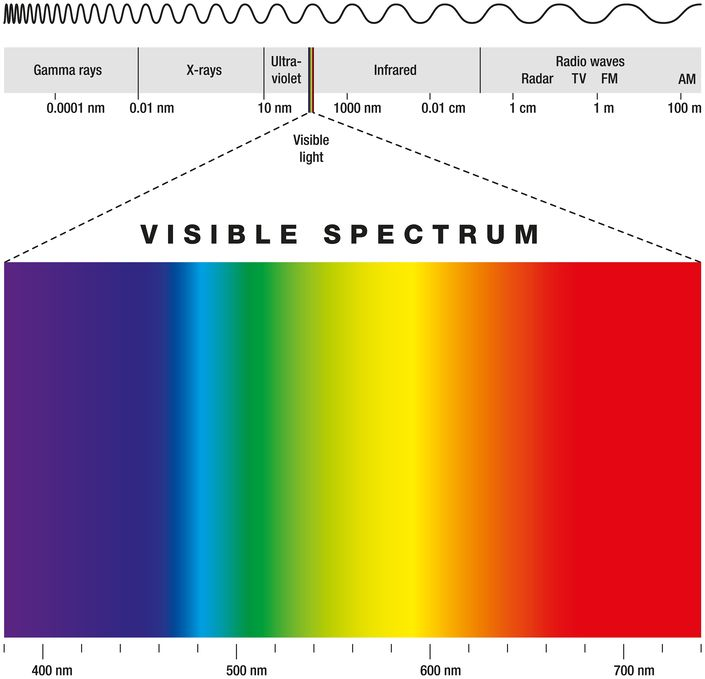

色彩的基本介紹與應用

前言
色彩在生活中無處不在,讓我們的生活更加多姿多采,但你有沒有曾經深入了解過他呢?像是色彩如何被分類,又是何時人們可以在紙張上畫出獨一無二的 顏色,如果你也對這些事情感到充滿興趣,那麼接下來我們便一起探索其中奧秘吧!
什麼是色相?
指的是色彩的外相，是在不同波長的光照射下，人眼所感覺不同的顏色，有紅色、橙色、黃色、綠色、藍色、紫色等等。什麼是明度?
是指色彩之明暗程度。 由於光線照射的強弱，色彩就開始有了由白亮色至黑暗色 不同程度的明暗度變化，因而再度產生各種色彩。色彩的加法理論
1802年，英國物理學家楊格發現混合紅(R)、綠(G)、藍(B)三個顏色的光，可以組成白光，所以她就推論——人眼有三種感光細胞。原來只要三種色光，依照不同的比例混合，便可以組成我們能夠看見的大部分色彩，
所以對人眼來說，最佳的色光三原色是ＲＧＢ紅、綠、藍。
色彩的加法混色原則便是
【我們看見的顏色=所有射進眼中的光線的疊加】
只要把紅色和藍色光疊加在一起並射入你的眼睛，你就會看見洋紅色；而把紅色光跟綠色光疊加在一起，我們則會看到黃色。
任何自主發光的顯示器都是依照這個「光的三原色」原理來設計的。例如電腦螢幕，他們透過同時發出綠光（540nm）和紅光（690nm），來讓你覺得你看到了580nm單一波段的黃光，但其實你看到的是兩種波段合起來的複合光。
雖然其中一點黃光範圍的電磁波都沒有，卻會產生見到黃光的感覺，神奇吧！你會看到「顏色」，並非光本身的特性，而是這個波長的電磁波進入受器（眼睛的錐狀細胞）後，由大腦告訴你的感受。
色彩的減法理論
我們之所以可以看見一朵紅色的花，是因為當白色日光照射他時，花朵吸收了綠色和藍色的光線，只反射紅色光線進入我們眼中，我們才得以覺得他是紅色。
而綠葉，則是因為其吸收了藍光與紅光，反射綠光進入我們眼中，所造成的感受。這便稱為「色彩減法理論」。
「色彩的減法混色」就是
【我們看見的顏色=白光-物體吸收的光線】
因為色彩的減法混色，都是在印刷、紡織、噴漆、繪畫中使用的,所以我們稱它為「顏料三原色」CMY或「色料三原色」。
而身為色料三原色的青、品紅與黃，正好可以與色光三原色的紅綠藍組成完整的色環，組成一個等角六角型，並互為彼此的補色。